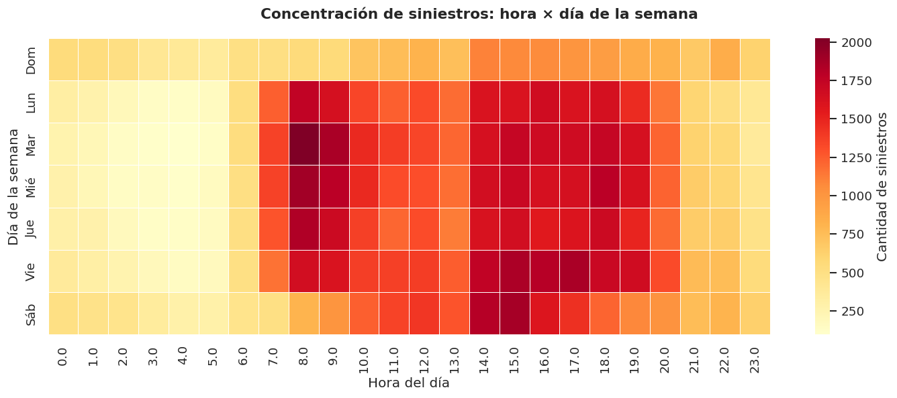
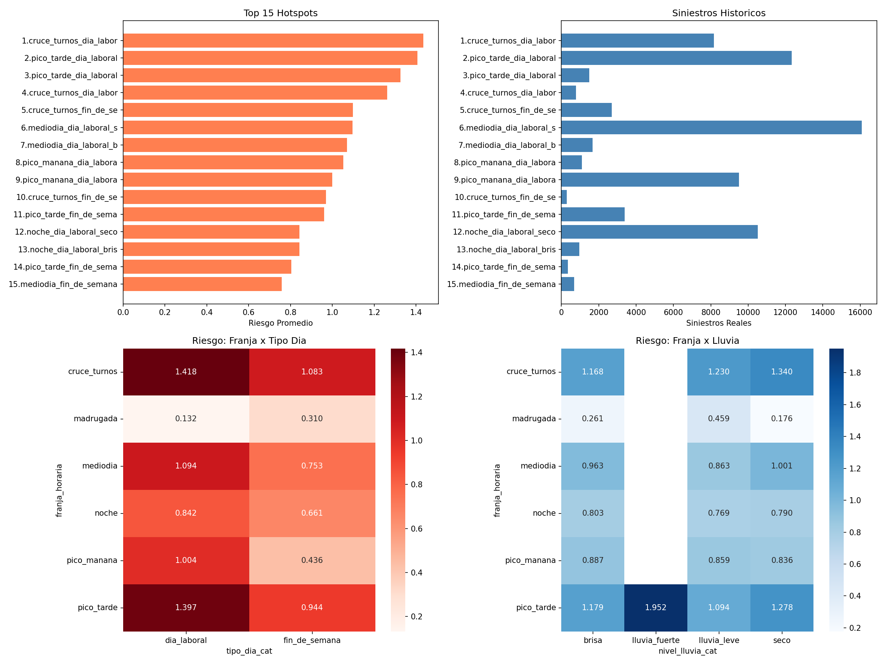

¿Qué factores determinan el riesgo vial en las zonas industriales de Monterrey,
y cómo se puede predecir cuándo y dónde es más peligroso conducir?
En la ZMM ocurre un accidente vial cada 8 minutos.
1 de cada 4, a menos de 2 km de una zona industrial.
Y más importante: ¿qué zonas entrarán en colapso vial en los próximos 3 años?
Era una pregunta legítima. El problema fue conseguir los datos para responderla.
Cruzamos cuatro fuentes distintas para construir una imagen real de la movilidad industrial.

Mapa interactivo de calor: cada concentración roja es donde los siniestros caen dentro del radio de un parque industrial real.
Cada fila es una hora del calendario entre 2023 y 2025, con todo el contexto disponible para ese momento.
hora, día, mes, tipo de día, intensidad hora pico, fin de semana
temperatura, nivel de lluvia en 5 categorías (Open-Meteo, 0 nulos)
impacto activo, nivel de aforo, rolling -3h de acumulación de tráfico
conteo por municipio industrial, distancia a zona, siniestros en radio 2 km
Teníamos la base de datos. Pero los datos de tiempos de traslado nunca llegaron.
Solo cubría 5 de los 183 parques industriales — sin selección sistemática ni histórico horario cruzable.
Los datos disponibles eran snapshots puntuales. No existía el histórico horario necesario para entrenar un modelo de predicción de tiempos.
Las alternativas consultadas (HERE, Google Maps) no ofrecen datos históricos descargables de forma gratuita ni para esta granularidad.
En vez de forzar una respuesta con datos insuficientes, dejamos que los datos mismos nos dijeran hacia dónde ir.
Ya teníamos 203,890 siniestros con granularidad horaria, coordenadas y 29 variables de contexto. Todo el trabajo previo ya apuntaba hacia el riesgo vial.
El pivot fue natural: de predecir tiempos a predecir riesgo.
No es "¿cuánto tardas en llegar?"
Es "¿en qué situación te pone la carretera"
cuando manejas cerca de un parque industrial.
M1: Clustering de zonas (¿cómo se agrupan?)
M2: Clasificación (¿bajo, medio o alto riesgo?)
M3: Regresión (¿cuántos accidentes esperar?)
Agrupamos las 183 zonas por su perfil real de siniestros. Encontramos 4 tipologías distintas en el mapa de Monterrey.
15 zonas. Mayor tasa de fallecidos (3.4%). Pocos accidentes pero los más severos.
Volumen alto de siniestros, gravedad media. Corredores con tráfico constante.
Zonas con perfil estable. Lesiones promedio, sin picos extremos.
58 zonas. KIA, Caterpillar, Ternium. Máximo flujo laboral, mayor número de siniestros totales.
Dado el contexto de una hora (hora del día, tipo de día, clima, zona), el modelo clasifica el nivel de riesgo esperado.
El modelo acertaría en 2 de cada 3 clasificaciones de riesgo para una hora concreta que nunca procesó antes. Eso es relevante cuando el contexto es solo: "son las 3pm, martes, seco, zona C3".
El modelo aprendió que no es lo mismo "las 3pm" que "las 3pm de un lunes laboral industrial".
El modelo predice cuántos accidentes esperar en zonas industriales durante la próxima hora. Ese número te dice dónde estás parado.
De toda la variación real en accidentes hora a hora, el modelo explica el 59% solo con contexto: hora del día, tipo de día, clima y zona. Sin saber nada extra.
El 41% restante son factores que no capturamos: un semáforo roto, un conductor específico, algo imprevisible.
Entrenamos en 2023-2024, validamos en 2025: R² = 0.51. Casi se mantiene — la señal es real, no memorización.
Imagina: es martes, 3 de la tarde, no llueve, manejas por Apodaca cerca de un parque industrial.
Según los datos, ese es exactamente el momento más peligroso del año. No el viernes por la noche. No en medio de una tormenta.

El cambio de turno industrial de 14 a 16h en un día laboral y clima seco genera más accidentes que la hora pico de tráfico general (18-19h).
No es la "hora pico" tradicional. Es cuando los turnos industriales se cruzan.
| Franja | Condición | Riesgo |
|---|---|---|
| Cruce de turnos 14-16h | Laboral · Seco | 1.44 |
| Pico tarde 16-19h | Laboral · Seco | 1.41 |
| Pico tarde 16-19h | Laboral · Brisa | 1.33 |
| Pico mañana 7-9h | Laboral · Seco | 1.09 |
La brisa eleva el riesgo más que la lluvia fuerte. El regiomontano no cambia su comportamiento de frenado ante lluvia leve — eso aparece directo en los datos.